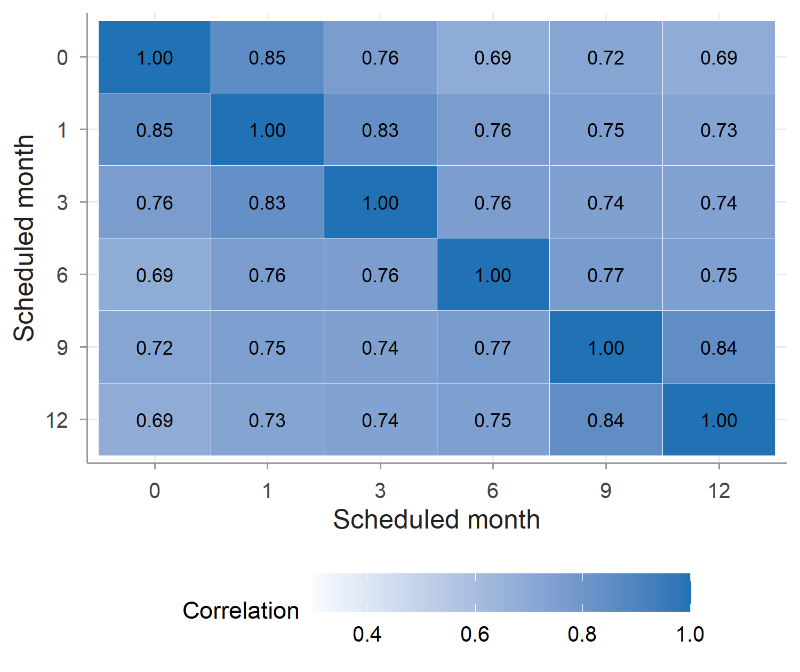
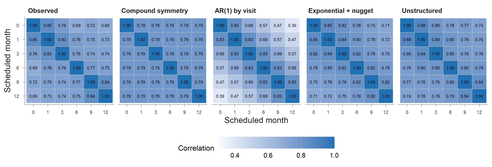
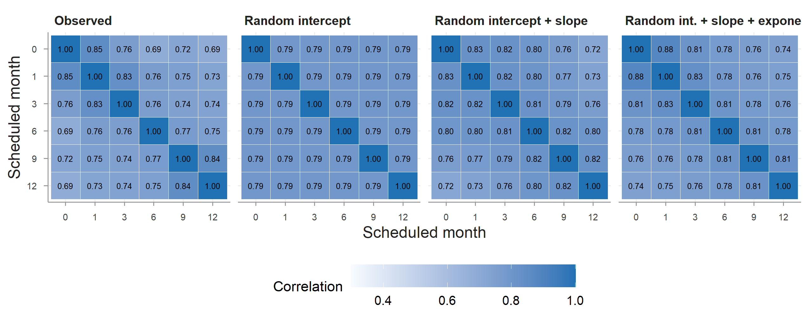
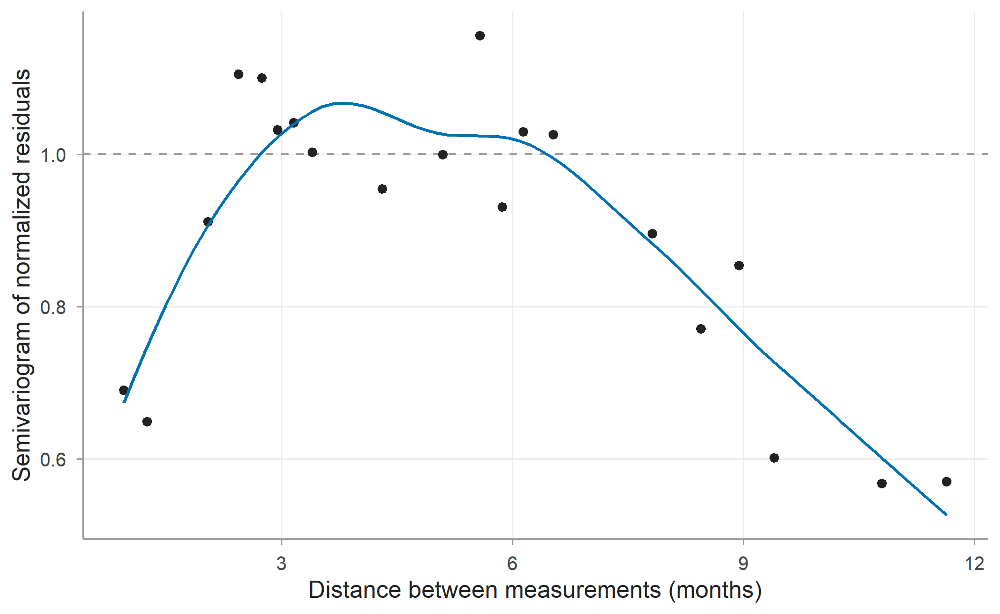
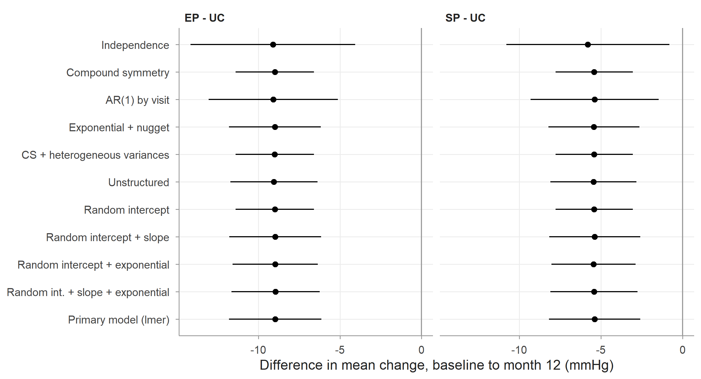

source(here::here("R", "setup.R"))
walk <- load_walk()5 Modelling covariance and choosing a model
Repeated measurements on the same participant are correlated, and every longitudinal model makes an assumption about that correlation, whether or not the analyst states it. Module 4 introduced one way to describe it: random intercepts and slopes. This module looks at the covariance of the repeated measurements directly. You will meet the standard residual correlation structures (compound symmetry, autoregressive, continuous-time exponential and unstructured), see how random effects and residual correlation combine into a single marginal covariance matrix, and learn to compare candidate models with likelihood-ratio tests and information criteria. The covariance model is rarely the scientific target, but it decides how efficiently the data are used, whether the standard errors can be trusted, and whether an analysis that ignores dropout is valid under missing at random. The module ends with an argument that matters in practice: the most complicated covariance model is not automatically the most useful one.
Learning outcomes
By the end of this module participants will be able to:
- 5.1 Describe compound symmetry, AR(1), continuous-time exponential correlation and unstructured covariance, and fit each with
nlme::gls()ornlme::lme(). - 5.2 Model heterogeneous residual variances over time.
- 5.3 Derive and compute the marginal covariance implied by a combination of random effects and residual correlation, and compare it with the observed covariance.
- 5.4 Compare models with likelihood-ratio tests and information criteria, using REML only for models with the same fixed effects and ML for comparing fixed effects.
- 5.5 Recognise boundary problems, convergence failures and singular fits, and respond to them sensibly.
- 5.6 Justify a final covariance model using both statistical evidence and substantive judgement, not complexity for its own sake.
Prerequisites
Modules 1 and 3 (within-subject correlation, the limits of repeated-measures ANOVA and sphericity) and Module 4 (linear mixed-effects models, REML and ML). Matrix notation is used throughout, but every matrix is also written out for the WALK visit schedule.
WarningSimulated data
All examples use simulated data from fictional studies. Results illustrate methods; they are not empirical findings.
5.1 Why the covariance model matters
The WALK trial randomised 360 participants to usual care (UC), a standard programme (SP) or an enhanced programme (EP) and measured systolic blood pressure (SBP) at months 0, 1, 3, 6, 9 and 12. The primary estimand, used in every module of this course, is the difference in mean change in SBP from baseline to month 12 between each programme and usual care. That is a statement about the mean. Why, then, spend a whole module on the covariance?
The quickest answer is a demonstration. Below, the same mean model (a separate mean for each arm at each scheduled visit, written visit_f * arm) is fitted twice with generalized least squares (nlme::gls()): once assuming that the six measurements on a participant are independent, and once allowing them to be correlated in the simplest possible way.
f_mean <- sbp ~ visit_f * arm
m_ind <- gls(f_mean, data = walk)
m_cs <- gls(f_mean, data = walk, correlation = corCompSymm(form = ~ 1 | id))
# difference in mean change baseline -> month 12, programme minus usual care
cells <- expand.grid(visit_f = levels(walk$visit_f), arm = levels(walk$arm))
cell_w <- function(a, v) as.numeric(cells$arm == a & cells$visit_f == v)
chg12 <- function(a) cell_w(a, "12") - cell_w(a, "0")
L_dic <- list("SP - UC" = chg12("SP") - chg12("UC"),
"EP - UC" = chg12("EP") - chg12("UC"))
dic <- function(m) {
e <- if (inherits(m, "gls")) emmeans(m, ~ visit_f * arm, mode = "df.error") else
emmeans(m, ~ visit_f * arm)
summary(contrast(e, L_dic), infer = TRUE)
}
dic(m_ind)#> contrast estimate SE df lower.CL upper.CL t.ratio p.value
#> SP - UC -5.80 2.55 1879 -10.8 -0.808 -2.279 0.0228
#> EP - UC -9.11 2.57 1879 -14.2 -4.062 -3.541 0.0004
#>
#> Degrees-of-freedom method: df.error
#> Confidence level used: 0.95dic(m_cs)#> contrast estimate SE df lower.CL upper.CL t.ratio p.value
#> SP - UC -5.41 1.21 1878 -7.78 -3.04 -4.474 <0.0001
#> EP - UC -8.99 1.22 1878 -11.39 -6.59 -7.343 <0.0001
#>
#> Degrees-of-freedom method: df.error
#> Confidence level used: 0.95The point estimates are close (-9.11 and -8.99 mmHg for EP versus UC), but the standard errors are not: 2.57 under independence and 1.22 with correlation. The independence model treats the month-12 and baseline measurements of one participant as if they came from different people, so it cannot see that much of the person-to-person variation in SBP cancels when we take a within-person change. Module 1 showed the same effect by simulation: ignoring positive correlation inflates standard errors for within-subject comparisons. The covariance model therefore matters for the estimand directly, because the estimand is a within-subject change.
There are three further reasons. First, when visits are missing the estimates of the means themselves depend on the covariance model, because the model uses each participant’s observed measurements to inform the missing ones. A likelihood-based analysis is valid under missing at random (MAR) only if the covariance model is approximately right (Module 10). Second, a covariance model that is too simple can give standard errors that are too small, and that is worse than standard errors that are too large. Third, the covariance often answers questions of its own: how stable is a participant’s blood pressure over a year, and how much of the variation is measurement error?
5.2 Looking at the observed covariance first
Before fitting covariance models, look at the data. With a common visit schedule we can estimate the covariance between visits directly. One detail matters: SBP falls faster in the programme arms, so if we compute covariances of raw SBP across all participants, differences between the arm means inflate them. We therefore first remove the arm-by-visit means (the residuals from an ordinary least squares fit of visit_f * arm) and then compute the covariance of these residuals between visits, using all pairs of visits that a participant attended.
sched <- c(0, 1, 3, 6, 9, 12)
walk$res_ols <- residuals(lm(sbp ~ visit_f * arm, data = walk))
res_wide <- walk |>
select(id, visit_f, res_ols) |>
pivot_wider(names_from = visit_f, values_from = res_ols) |>
select(-id)
obs_cov <- cov(res_wide, use = "pairwise.complete.obs")
obs_cor <- cov2cor(obs_cov)
round(obs_cov, 1)#> 0 1 3 6 9 12
#> 0 175.8 149.9 132.5 120.0 126.3 118.1
#> 1 149.9 175.3 144.1 133.1 130.8 125.4
#> 3 132.5 144.1 171.1 130.3 128.3 125.1
#> 6 120.0 133.1 130.3 173.0 133.3 127.8
#> 9 126.3 130.8 128.3 133.3 174.3 145.0
#> 12 118.1 125.4 125.1 127.8 145.0 169.0round(obs_cor, 2)#> 0 1 3 6 9 12
#> 0 1.00 0.85 0.76 0.69 0.72 0.69
#> 1 0.85 1.00 0.83 0.76 0.75 0.73
#> 3 0.76 0.83 1.00 0.76 0.74 0.74
#> 6 0.69 0.76 0.76 1.00 0.77 0.75
#> 9 0.72 0.75 0.74 0.77 1.00 0.84
#> 12 0.69 0.73 0.74 0.75 0.84 1.00Three features stand out, and each points to a component of a covariance model:
- The variances are roughly constant, between 169 and 176 mmHg², so the standard deviation of SBP around the arm mean is about 13.2 mmHg at every visit. There is little sign of heterogeneous variances.
- Every correlation is high, at least 0.69. Some participants have high blood pressure throughout the year and others low: a stable person-level component, which a random intercept describes.
- Correlations decline with the time between visits, from 0.85 between months 0 and 1 to 0.69 between months 0 and 12, but they do not decline towards zero. They level off. Correlation that decays with time separation is called serial correlation. Correlation that levels off at a high value suggests serial correlation sitting on top of a stable person-level component.
mat_long <- function(M, label) {
data.frame(row = factor(rep(rownames(M), ncol(M)), levels = rownames(M)),
col = factor(rep(colnames(M), each = nrow(M)), levels = colnames(M)),
value = as.vector(M), model = label)
}
ggplot(mat_long(obs_cor, "Observed"), aes(col, row, fill = value)) +
geom_tile(colour = "white") +
geom_text(aes(label = sprintf("%.2f", value)), size = 3) +
scale_fill_gradient(low = "#F7FBFF", high = "#2171B5", limits = c(0.3, 1),
breaks = c(0.4, 0.6, 0.8, 1), name = "Correlation") +
scale_y_discrete(limits = rev) +
labs(x = "Scheduled month", y = "Scheduled month") +
theme(panel.grid = element_blank(), legend.key.width = unit(1.2, "cm"))
This empirical summary is possible here because WALK has a fixed visit schedule and 360 participants. The pairwise-complete covariances use different subsets of participants for different cells, and under MAR dropout they are not unbiased estimates of the population covariances, so treat them as a guide rather than a gold standard. With irregular visit times and no schedule, the semivariogram introduced later plays the same role.
Because the data are simulated we know the truth, which is not possible with real data. WALK was generated with a random intercept (SD 11 mmHg), a random slope (SD 0.35 mmHg/month, correlation −0.25 with the intercept), a clinic effect (SD 3 mmHg), a serially correlated residual process (SD 5 mmHg, correlation \(\exp(-|\Delta t|/3)\) with \(\Delta t\) in months) and independent measurement error (SD 4 mmHg). The observed pattern matches that recipe: a large stable component plus serial correlation that fades over a few months, plus noise.
5.3 Residual correlation structures
The first family of covariance models describes the correlation of the residuals directly, without random effects. These are sometimes called marginal or covariance-pattern models. They are fitted with nlme::gls().
5.3.1 The research question and estimand
The scientific question does not change: what is the difference in mean change in SBP from baseline to month 12 between each programme and usual care? The covariance structure is a means to that end. It also answers secondary descriptive questions, such as how quickly the correlation between two measurements of the same person fades as the time between them grows.
5.3.2 Data structure and outcome types
These models are for a continuous outcome measured repeatedly, assumed approximately normal given the covariates. Data are in long format, one row per observation, with a participant identifier and a time variable. Compound symmetry and unstructured models need no particular timing. AR(1) as used here needs a visit index (integer order of the measurements). The exponential structure uses actual measurement times and is the natural choice when visits are irregular, as they are in WALK (month differs from month_sched).
5.3.3 Intuition
Think of the \(n_i \times n_i\) covariance matrix of one participant’s measurements. A covariance structure is a rule that fills in that matrix with a few parameters.
- Compound symmetry (CS): every pair of measurements has the same correlation \(\rho\), whatever the time between them. This is the pattern produced by a random intercept and nothing else, and it is the sphericity-type assumption behind repeated-measures ANOVA (Module 3).
- First-order autoregressive, AR(1): correlation falls by a constant factor \(\rho\) with each step between visits, so visits \(k\) steps apart have correlation \(\rho^k\). Neighbours are strongly correlated; distant visits are almost uncorrelated.
- Continuous-time exponential: correlation depends on the actual time gap \(|t_{ij} - t_{ik}|\) and decays as \(\exp(-|t_{ij}-t_{ik}|/\phi)\), where the range \(\phi\) is measured in months. A nugget adds independent measurement error, so that even two measurements taken on the same day are not perfectly correlated.
- Unstructured (UN): every variance and every correlation is a separate parameter. Nothing is assumed except that the covariance matrix is the same for all participants with the same visits.
5.3.4 The model
All four models share the same form. For participant \(i\) with \(n_i\) observations,
\[ \mathbf{y}_i = X_i \boldsymbol\beta + \boldsymbol\varepsilon_i, \qquad \boldsymbol\varepsilon_i \sim N(\mathbf{0}, R_i), \]
where \(\mathbf{y}_i\) is the vector of SBP measurements, \(X_i\) is the fixed-effects design matrix (here indicators for each visit, arm and visit-by-arm combination), \(\boldsymbol\beta\) is the vector of fixed effects and \(\boldsymbol\varepsilon_i\) the vector of residual errors. There are no random effects, so the marginal covariance \(V_i\) equals the residual covariance \(R_i\). Write \(R_i = \sigma^2 C_i\), with \(\sigma^2\) the residual variance and \(C_i\) a correlation matrix. The structures differ only in \(C_i\). For measurements \(j\) and \(k\) of participant \(i\):
\[ \begin{aligned} \text{CS:}\quad & [C_i]_{jk} = \rho \quad (j \neq k) \\ \text{AR(1):}\quad & [C_i]_{jk} = \rho^{|j-k|} \\ \text{Exponential with nugget } c:\quad & [C_i]_{jk} = (1-c)\exp\!\left(-|t_{ij}-t_{ik}|/\phi\right) \quad (j \neq k) \\ \text{UN:}\quad & [R_i]_{jk} = \sigma_{jk}, \text{ a separate parameter for each pair, with } \sigma_{jj} = \sigma_j^2. \end{aligned} \]
Here \(\rho\) is a correlation parameter, \(|j-k|\) is the number of visits between two measurements, \(t_{ij}\) is the actual time of occasion \(j\), \(\phi > 0\) is the range (larger means slower decay) and \(0 \le c < 1\) is the nugget, the proportion of the residual variance that is uncorrelated measurement error. With six scheduled visits CS and AR(1) have one correlation parameter, the exponential has two, and UN has \(6 + 15 = 21\) variance and covariance parameters.
To see what the structures say for WALK, take a participant measured exactly on schedule (months 0, 1, 3, 6, 9, 12). AR(1) by visit index gives months 0 and 1 the same correlation \(\rho\) as months 9 and 12, even though the second gap is three times longer. The exponential structure uses the actual gaps, so \(C_{12} = (1-c)e^{-1/\phi}\) for months 0 and 1 but \(C_{56} = (1-c)e^{-3/\phi}\) for months 9 and 12.
5.3.5 Assumptions and limitations
All four assume that the mean model is correct, that the residuals are normally distributed (estimates of \(\boldsymbol\beta\) are fairly insensitive to this, but prediction intervals are not), and that the same covariance applies to every participant (or every participant in a group, if you let it vary by arm). CS assumes correlation does not depend on the time gap, which is rarely true for long follow-up. AR(1) by visit index ignores unequal spacing; AR(1) correlations also fall towards zero, which contradicts the stable person-level component seen in most human data. The exponential structure without a random intercept has the same problem, which it can only escape by estimating a very long range. UN is the most flexible but needs a common set of scheduled visits, uses many parameters (it grows as \(n(n+1)/2\)), can fail to converge with few participants per visit, and says nothing about times between the scheduled visits.
5.3.6 Fitting the model in R
gls() takes the mean model as a formula, a correlation argument for \(C_i\) and a weights argument for heterogeneous variances (next section). Inside the correlation constructors, the formula ~ time | group names the time (or order) variable and the grouping variable.
m_ar1 <- gls(f_mean, data = walk,
correlation = corAR1(form = ~ visit | id)) # visit index 1-6
m_exp <- gls(f_mean, data = walk,
correlation = corExp(form = ~ month | id, nugget = TRUE))
m_un <- gls(f_mean, data = walk,
correlation = corSymm(form = ~ visit | id), # free correlations
weights = varIdent(form = ~ 1 | visit_f)) # free variancesThree details are easy to get wrong. corAR1() needs an integer position variable, so we use visit (1 to 6), not month. If a participant misses visit 3, visit still tells nlme that visits 2 and 4 are two steps apart. corSymm() needs the same integer index so that it knows which correlation belongs to which pair of visits. corExp() takes the actual times (month), so unequal and irregular spacing is used exactly. All models are fitted by REML, the default in gls(), which is appropriate because they share the same fixed effects.
5.3.7 Interpreting the output
The summary of a gls fit has three parts: the information criteria, the estimated correlation parameters, and the fixed effects. Here is the exponential model, with the long correlation matrix of the estimates suppressed.
s_exp <- summary(m_exp)
s_exp$modelStruct#> corStruct parameters:
#> range nugget
#> 4.102 -1.857c(sigma = m_exp$sigma, logLik = logLik(m_exp), AIC = AIC(m_exp), BIC = BIC(m_exp))#> sigma logLik AIC BIC
#> 13.48 -6612.56 13267.12 13383.43| Output line | What it means | Value here |
|---|---|---|
range |
\(\hat\phi\): months over which the correlated part decays by a factor \(e\) | 60.4 months |
nugget |
\(\hat c\): share of residual variance that is uncorrelated noise | 0.135 |
sigma |
\(\hat\sigma\): residual SD (here the total SD, as there are no random effects) | 13.48 mmHg |
| implied correlation, 1 month apart | \((1-\hat c)e^{-1/\hat\phi}\) | 0.85 |
| implied correlation, 12 months apart | \((1-\hat c)e^{-12/\hat\phi}\) | 0.71 |
The estimated range of about 60 months may look strange when the true serial process decays over 3 months. It is not an error. Without a random intercept, the exponential structure has to produce correlations that stay around 0.7 over a year, and the only way it can do so is with a very slow decay. The single exponential is absorbing both the stable person-level component and the short-term serial component. We return to this when random effects and serial correlation are combined.
For the other structures the key numbers are the CS correlation \(\hat\rho = 0.79\) and the AR(1) correlation between adjacent visits \(\hat\rho = 0.83\). The AR(1) model therefore implies a correlation of \(0.83^5 = 0.39\) between baseline and month 12, far below the observed 0.69. The unstructured model returns 15 correlations and 6 variances, too many to read one by one, so we compare its implied matrix with the observed one graphically below.
The fixed effects are the arm-by-visit means; the estimand is a combination of them, computed with emmeans as in the first section. All structures give a similar difference in mean change, with different standard errors:
bind_rows(lapply(list(Independence = m_ind, CS = m_cs, `AR(1)` = m_ar1,
Exponential = m_exp, Unstructured = m_un),
function(m) as.data.frame(dic(m))[, c("contrast", "estimate", "SE")]),
.id = "structure")#> structure contrast estimate SE
#> 1 Independence SP - UC -5.802 2.546
#> 2 Independence EP - UC -9.106 2.572
#> 3 CS SP - UC -5.409 1.209
#> 4 CS EP - UC -8.990 1.224
#> 5 AR(1) SP - UC -5.386 2.001
#> 6 AR(1) EP - UC -9.087 2.017
#> 7 Exponential SP - UC -5.426 1.422
#> 8 Exponential EP - UC -8.985 1.438
#> 9 Unstructured SP - UC -5.453 1.343
#> 10 Unstructured EP - UC -9.044 1.3585.3.8 Checking the model
The most direct check for a scheduled design is to compare the correlation matrix implied by each model with the observed one. The function below computes the implied marginal covariance at the scheduled months for any gls or lme fit. It is written out by hand so that the formula \(V = ZGZ^\top + \sigma^2 S C S\) is visible (\(S\) is a diagonal matrix of standard-deviation ratios, introduced in the next section). Note that nlme stores corAR1() objects with class corARMA.
implied_cov <- function(model, times = sched) {
k <- length(times); C <- diag(k)
cs <- model$modelStruct$corStruct
if (!is.null(cs)) {
if (inherits(cs, "corCompSymm")) {
C <- matrix(coef(cs, unconstrained = FALSE), k, k); diag(C) <- 1
} else if (inherits(cs, c("corAR1", "corARMA"))) {
C <- coef(cs, unconstrained = FALSE)^abs(outer(1:k, 1:k, "-"))
} else if (inherits(cs, "corExp")) {
p <- coef(cs, unconstrained = FALSE)
nug <- if ("nugget" %in% names(p)) p[["nugget"]] else 0
C <- (1 - nug) * exp(-abs(outer(times, times, "-")) / p[["range"]])
diag(C) <- 1
} else if (inherits(cs, "corSymm")) {
C[lower.tri(C)] <- coef(cs, unconstrained = FALSE)
C <- C + t(C) - diag(k)
}
}
vs <- model$modelStruct$varStruct
s <- if (is.null(vs)) rep(1, k) else
coef(vs, unconstrained = FALSE, allCoef = TRUE)[as.character(times)]
V <- model$sigma^2 * diag(s) %*% C %*% diag(s) # R_i
if (inherits(model, "lme")) { # + Z G Z'
G <- as.matrix(getVarCov(model))
Z <- cbind(1, times)[, seq_len(ncol(G)), drop = FALSE]
V <- Z %*% G %*% t(Z) + V
}
dimnames(V) <- list(times, times)
V
}
round(cov2cor(implied_cov(m_ar1)), 2)#> 0 1 3 6 9 12
#> 0 1.00 0.83 0.69 0.57 0.47 0.39
#> 1 0.83 1.00 0.83 0.69 0.57 0.47
#> 3 0.69 0.83 1.00 0.83 0.69 0.57
#> 6 0.57 0.69 0.83 1.00 0.83 0.69
#> 9 0.47 0.57 0.69 0.83 1.00 0.83
#> 12 0.39 0.47 0.57 0.69 0.83 1.00Figure 5.2 places the observed correlation matrix next to the matrices implied by the four structures. CS gets the overall level right but misses the decline with lag. AR(1) by visit index decays far too fast. The exponential model with a nugget follows the decline well, and the unstructured model reproduces the observed matrix closely (it should: it has a parameter for every cell), although even UN is not identical to the pairwise-complete matrix, because the likelihood uses the information from incomplete participants differently.
heat_gls <- bind_rows(
mat_long(obs_cor, "Observed"),
mat_long(cov2cor(implied_cov(m_cs)), "Compound symmetry"),
mat_long(cov2cor(implied_cov(m_ar1)), "AR(1) by visit"),
mat_long(cov2cor(implied_cov(m_exp)), "Exponential + nugget"),
mat_long(cov2cor(implied_cov(m_un)), "Unstructured")) |>
mutate(model = factor(model, levels = unique(model)))
plot_heat <- function(d, ncol = 5) {
ggplot(d, aes(col, row, fill = value)) +
geom_tile(colour = "white") +
geom_text(aes(label = sprintf("%.2f", value)), size = 2.2) +
scale_fill_gradient(low = "#F7FBFF", high = "#2171B5", limits = c(0.3, 1),
breaks = c(0.4, 0.6, 0.8, 1), name = "Correlation") +
scale_y_discrete(limits = rev) +
facet_wrap(~ model, ncol = ncol) +
labs(x = "Scheduled month", y = "Scheduled month") +
theme(panel.grid = element_blank(), legend.key.width = unit(1.2, "cm"),
axis.text = element_text(size = 7))
}
plot_heat(heat_gls)
Two further checks are useful. Normalized residuals (residuals(m, type = "normalized")) should look like uncorrelated noise with constant variance if the covariance model is right; plot them against time and fitted values. And the semivariogram, shown later, checks serial correlation when the times are irregular.
5.3.9 Reporting
State the structure, why it was chosen, and its estimated parameters. A methods paragraph might read:
TipReporting example
SBP was analysed with a generalized least squares model with a separate mean for each arm at each scheduled visit. The within-participant correlation was modelled with a continuous-time exponential structure in actual months since randomisation, with a nugget for measurement error, fitted by REML. The estimated range was 60.4 months and the nugget 0.14, implying correlations of 0.85 between measurements one month apart and 0.71 between measurements twelve months apart. The difference in mean change from baseline to month 12 was -9.0 (-11.8 to -6.2) mmHg for the enhanced programme versus usual care.
5.3.10 Common mistakes
ImportantCommon mistakes
- Using
corAR1(form = ~ month | id)with non-integer times. AR(1) needs an integer order; with irregular times usecorExp()(orcorCAR1()) on actual time. - Using
corSymm()without an index.corSymm(form = ~ 1 | id)assumes each participant’s rows are in visit order with no gaps. With missed visits the correlations are then attached to the wrong pairs. Always give~ visit | id. - Computing the observed covariance on raw outcomes. Differences between group means inflate covariances; remove the mean model first.
- Reading AR(1) by visit as a continuous-time model. With unequal spacing (1, 2, 3, 3, 3 months in WALK) the same parameter is applied to gaps of different lengths.
- Treating the unstructured model as automatically correct. It is flexible but costly in parameters, fragile with small samples, and cannot interpolate between scheduled times.
5.4 Heterogeneous residual variances
5.4.1 The research question and estimand
The estimand is unchanged. The question here is narrower: does the variability of SBP around the arm mean change over follow-up? In many studies it does. Variance can grow as participants diverge in their response to treatment, or shrink after a run-in period removes the most variable participants. Getting the variances wrong mainly affects the standard errors of visit-specific contrasts and the weight each visit gets.
5.4.2 Data structure and outcome types
As before: a continuous outcome in long format. Heterogeneous variances by visit need a variable that defines the variance strata, here the scheduled visit visit_f. Variances can also differ by arm or depend on a continuous covariate.
5.4.3 Intuition
Instead of one residual variance \(\sigma^2\), allow a different variance at each scheduled visit. The correlations stay as before; only the diagonal of the covariance matrix changes. It is a stretching of each row and column of the matrix.
5.4.4 The model
\[ R_i = \sigma^2\, S_i C_i S_i, \qquad S_i = \operatorname{diag}(\delta_{v(i1)}, \dots, \delta_{v(in_i)}), \]
where \(\sigma^2\) is the residual variance at the reference visit (baseline), \(\delta_v\) is the ratio of the residual standard deviation at visit \(v\) to that at baseline (\(\delta_{0} = 1\)), \(v(ij)\) is the scheduled visit of observation \(j\), and \(C_i\) is any correlation structure from the previous section. The variance at visit \(v\) is \(\sigma^2\delta_v^2\). With six visits this adds five parameters. Combined with corSymm() it gives the fully unstructured covariance.
5.4.5 Assumptions and limitations
The variance ratios are assumed common to all participants. The ratios are estimated from the participants seen at each visit, so with MAR dropout they rely on the model being right in the same way as the means. Each extra parameter costs information; with six visits and 360 participants that is cheap, but with many visits it may not be.
5.4.6 Fitting the model in R
m_cs_het <- gls(f_mean, data = walk,
correlation = corCompSymm(form = ~ 1 | id),
weights = varIdent(form = ~ 1 | visit_f))varIdent(form = ~ 1 | visit_f) estimates one SD ratio per level of visit_f. Other variance functions exist (varPower(), varExp(), varIdent(form = ~ 1 | arm)), and they combine with varComb(); Pinheiro and Bates (2000) describe them.
5.4.7 Interpreting the output
coef(m_cs_het$modelStruct$varStruct, unconstrained = FALSE, allCoef = TRUE)#> 0 1 3 6 9 12
#> 1.0000 0.9992 1.0090 1.0432 1.0317 1.0294m_cs_het$sigma#> [1] 13.29het_lrt <- anova(m_cs, m_cs_het)
het_lrt#> Model df AIC BIC logLik Test L.Ratio p-value
#> m_cs 1 20 13353 13464 -6656
#> m_cs_het 2 25 13360 13499 -6655 1 vs 2 2.639 0.7555The ratios are all close to 1, between 0.999 and 1.043. The estimated residual SD at baseline is 13.29 mmHg, so the SD at month 12 is 13.29 × 1.029 = 13.69 mmHg. The likelihood-ratio test of the two REML fits (same mean model, so REML is legitimate) gives \(\chi^2 = 2.64\) on 5 degrees of freedom, p = 0.755, and AIC rises from 13352.8 to 13360.1. There is no evidence that the variance changes over follow-up, which agrees with the observed variances and with the simulation, where every visit has the same variance apart from the small contribution of the random slope.
5.4.8 Checking the model
Plot the standard deviation of residuals by visit (or the square root of the diagonal of obs_cov). If you have fitted varIdent, the normalized residuals should have similar spread at every visit. A boxplot of residuals(m_cs_het, type = "normalized") by visit_f does this.
5.4.9 Reporting
TipReporting example
Allowing a separate residual variance at each scheduled visit did not improve the fit (likelihood-ratio test on REML fits, \(\chi^2_{5} = 2.64\), p = 0.755; estimated SD ratios relative to baseline 1.00 to 1.04), so a common residual variance was retained.
5.4.10 Common mistakes
ImportantCommon mistakes
- Comparing the
sigmaof avarIdentmodel with that of a homogeneous model. WithvarIdent,sigmais the SD at the reference level only. - Using
weights = ~ visit_f. Ingls()a one-sided formula inweightsmeansvarFixed()(variance proportional to the covariate). UsevarIdent(form = ~ 1 | visit_f). - Adding heterogeneity without looking. Check whether residual SDs actually differ before spending parameters.
5.5 Random effects and residual correlation together: the marginal covariance
5.5.1 The research question and estimand
Random effects (Module 4) and residual correlation structures are two routes to the same destination, the marginal covariance of the repeated measurements. The question in this section is how they combine, and which combination describes the WALK data. The treatment estimand is still the difference in mean change at month 12.
5.5.2 Data structure and outcome types
A continuous outcome in long format with a participant identifier, actual times for the random slope and the exponential correlation, and (optionally) a visit index.
5.5.3 Intuition
Imagine the measured SBP of one participant as the sum of four pieces. There is a personal level (random intercept): some people run high all year. There is a personal trend (random slope): some drift up, some down. There is a slowly wandering short-term state, such as a stressful month or a change in medication, that makes measurements close in time similar to each other (serial correlation). And there is a measurement error on each reading (the nugget). The random intercept and slope create correlation that never fades. The serial process creates correlation that fades over a few months. Measurement error creates none. The observed covariance is the sum of all of these contributions, and this is the decomposition proposed by Diggle et al. (2002) for longitudinal data.
5.5.4 The model
The linear mixed model with serially correlated residuals is
\[ \mathbf{y}_i = X_i\boldsymbol\beta + Z_i\mathbf{b}_i + \boldsymbol\varepsilon_i, \qquad \mathbf{b}_i \sim N(\mathbf{0}, G), \qquad \boldsymbol\varepsilon_i \sim N(\mathbf{0}, R_i), \]
with \(\mathbf{b}_i\) independent of \(\boldsymbol\varepsilon_i\). Here \(Z_i\) is the random-effects design matrix, whose \(j\)th row is \((1, t_{ij})\) for a random intercept and slope; \(\mathbf{b}_i = (b_{0i}, b_{1i})^\top\) is the vector of random effects; and
\[ G = \begin{pmatrix} \tau_0^2 & \tau_{01} \\ \tau_{01} & \tau_1^2 \end{pmatrix} \]
holds the random-intercept variance \(\tau_0^2\), the random-slope variance \(\tau_1^2\) and their covariance \(\tau_{01}\). Because \(\mathbf{b}_i\) and \(\boldsymbol\varepsilon_i\) are independent, the marginal covariance of \(\mathbf{y}_i\), averaging over the random effects, is
\[ V_i = \operatorname{Var}(\mathbf{y}_i) = Z_i G Z_i^\top + R_i . \]
The derivation is one line: \(\operatorname{Var}(Z_i\mathbf{b}_i + \boldsymbol\varepsilon_i) = Z_i\operatorname{Var}(\mathbf{b}_i)Z_i^\top + \operatorname{Var}(\boldsymbol\varepsilon_i)\), since the covariance between the two parts is zero. Writing out a single element for measurements at times \(t\) and \(s\):
\[ \operatorname{Cov}(y_{it}, y_{is}) = \tau_0^2 + \tau_{01}(t+s) + \tau_1^2\, t s + [R_i]_{ts}, \qquad \operatorname{Var}(y_{it}) = \tau_0^2 + 2\tau_{01}t + \tau_1^2 t^2 + \sigma^2 . \]
With independent residuals, \([R_i]_{ts} = 0\) for \(t \neq s\), so all correlation comes from \(G\). With an exponential structure and nugget, \(R_i = \sigma^2 C_i\) with \([C_i]_{ts} = (1-c)\exp(-|t-s|/\phi)\) for \(t\ne s\), adding serial correlation on top. Three features follow from the formula. A random intercept alone gives a constant covariance \(\tau_0^2\), which is compound symmetry. A random slope makes the variance a quadratic function of time, so a random-slope model always implies some heterogeneity of variance. And because the random-effects part does not decay, a model with random effects plus exponential residuals produces correlations that decline with lag and then level off, exactly the pattern in the observed matrix.
5.5.5 Assumptions and limitations
The random effects and residuals are assumed normal and independent of each other and of the covariates. Random effects and serial correlation can be hard to separate: a steep exponential decay and a random slope both make distant measurements less alike, and with only six visits per participant the data contain limited information to tell them apart. Estimates of the individual components (such as the slope variance) can therefore be unstable even when the total implied covariance is well estimated. That is acceptable when the covariance is a nuisance, but it should make you cautious about interpreting the components substantively.
5.5.6 Fitting the model in R
lme4::lmer() supports random effects but not residual correlation structures, so models that combine them are fitted with nlme::lme(), which takes both a random and a correlation argument. lme() with random = ~ 1 + month | id fits the same model as the course’s primary lmer() model.
m_ri <- lme(f_mean, random = ~ 1 | id, data = walk)
m_rs <- lme(f_mean, random = ~ 1 + month | id, data = walk) # = primary model
m_ri_exp <- lme(f_mean, random = ~ 1 | id, data = walk,
correlation = corExp(form = ~ month | id, nugget = TRUE))
m_rs_exp <- lme(f_mean, random = ~ 1 + month | id, data = walk,
correlation = corExp(form = ~ month | id, nugget = TRUE))5.5.7 Interpreting the output
nlme::VarCorr(m_rs_exp)#> id = pdLogChol(1 + month)
#> Variance StdDev Corr
#> (Intercept) 141.7143 11.9044 (Intr)
#> month 0.1181 0.3437 -0.101
#> Residual 39.3606 6.2738m_rs_exp$modelStruct$corStruct#> Correlation structure of class corExp representing
#> range nugget
#> 1.6340 0.1628intervals(m_rs_exp, which = "var-cov")#> Approximate 95% confidence intervals
#>
#> Random Effects:
#> Level: id
#> lower est. upper
#> sd((Intercept)) 10.8843 11.9044 13.0201
#> sd(month) 0.1888 0.3437 0.6256
#> cor((Intercept),month) -0.3583 -0.1011 0.1704
#>
#> Correlation structure:
#> lower est. upper
#> range 0.83828 1.6340 3.1852
#> nugget 0.01982 0.1628 0.6517
#>
#> Within-group standard error:
#> lower est. upper
#> 5.778 6.274 6.812| Output line | Symbol | Estimate | True value (known only because simulated) |
|---|---|---|---|
(Intercept) StdDev |
\(\tau_0\) | 11.9 mmHg | 11 (plus a clinic SD of 3, not modelled here: \(\sqrt{11^2+3^2} = 11.4\)) |
month StdDev |
\(\tau_1\) | 0.344 mmHg/month | 0.35 |
Corr |
\(\tau_{01}/(\tau_0\tau_1)\) | -0.1 | −0.25 |
Residual StdDev |
\(\sigma\) | 6.27 mmHg | \(\sqrt{5^2+4^2} = 6.4\) |
range |
\(\phi\) | 1.63 months | 3 |
nugget |
\(c\) | 0.16 | \(4^2/(5^2+4^2) = 0.39\) |
The combined model recovers the generating values reasonably, with wide intervals for the components that are hard to separate: the range and nugget intervals are wide, and the slope SD interval runs from 0.19 to 0.63. Compare the random-slope model without serial correlation: there the slope SD is 0.54 mmHg/month, well above the true 0.35. Without a serial component the random slope is the only device the model has to make distant measurements less correlated than close ones, so it inflates the slope variance. This is a general lesson: the variance components of a misspecified covariance model may absorb features they were not meant to describe.
Now compute the implied marginal covariance \(V_i\) for a participant measured exactly on schedule, and convert it to correlations:
V_rsexp <- implied_cov(m_rs_exp)
round(V_rsexp, 1)#> 0 1 3 6 9 12
#> 0 181.1 159.2 145.7 140.1 138.1 136.8
#> 1 159.2 180.4 150.1 141.1 138.9 137.8
#> 3 145.7 150.1 179.7 145.4 140.8 139.9
#> 6 140.1 141.1 145.4 180.4 147.1 143.6
#> 9 138.1 138.9 140.8 147.1 183.2 151.0
#> 12 136.8 137.8 139.9 143.6 151.0 188.2round(cov2cor(V_rsexp), 2)#> 0 1 3 6 9 12
#> 0 1.00 0.88 0.81 0.78 0.76 0.74
#> 1 0.88 1.00 0.83 0.78 0.76 0.75
#> 3 0.81 0.83 1.00 0.81 0.78 0.76
#> 6 0.78 0.78 0.81 1.00 0.81 0.78
#> 9 0.76 0.76 0.78 0.81 1.00 0.81
#> 12 0.74 0.75 0.76 0.78 0.81 1.00The diagonal shows a variance of 181.1 mmHg² at baseline and 188.2 at month 12; the observed variances were 175.8 and 169. You can rebuild the month 0 to month 1 covariance by hand from the table: \(\tau_0^2 + \tau_{01}(0+1) + \tau_1^2(0)(1) + \sigma^2(1-c)e^{-1/\phi}\) = 141.7 + (-0.41) + 0 + 39.4 × 0.454 = 159.2 mmHg².
5.5.8 Checking the model
Figure 5.3 compares the observed correlation matrix with three random-effects models. The random-intercept model is identical to compound symmetry (look back at Figure 5.2). The random-slope model produces a gentle decline with lag. Adding exponential serial correlation lifts the correlation between adjacent visits, especially months 0 and 1 and months 9 and 12, matching the observed values more closely.
heat_lme <- bind_rows(
mat_long(obs_cor, "Observed"),
mat_long(cov2cor(implied_cov(m_ri)), "Random intercept"),
mat_long(cov2cor(implied_cov(m_rs)), "Random intercept + slope"),
mat_long(cov2cor(implied_cov(m_rs_exp)), "Random int. + slope + exponential")) |>
mutate(model = factor(model, levels = unique(model)))
plot_heat(heat_lme, ncol = 4)
Heatmaps need a common schedule. A check that works with irregular times is the semivariogram of the normalized residuals (Diggle et al. 2002; Pinheiro and Bates 2000). For each pair of residuals from the same participant it plots half their squared difference against the time between them. If the model has accounted for all within-person correlation, the normalized residuals are independent with variance 1, and the semivariogram is flat at 1. Values below 1 at short distances mean that residuals close in time are still alike: unexplained serial correlation.
vg <- Variogram(m_rs, form = ~ month | id, resType = "normalized", maxDist = 12)
ggplot(vg, aes(dist, variog)) +
geom_hline(yintercept = 1, colour = "#9A9A9A", linetype = 2) +
geom_point() +
geom_smooth(method = "loess", se = FALSE, colour = "#0072B2",
linewidth = 0.7, formula = y ~ x) +
labs(x = "Distance between measurements (months)",
y = "Semivariogram of normalized residuals")
The semivariogram is about 0.69 for measurements less than a month apart, rises to about 1 between two and seven months, and falls again at long distances. The low values at short distances are the serial correlation that the random-slope model misses. The low values at long distances arise because the inflated slope variance makes the model predict less correlation between distant measurements than there really is, so the normalized residuals at months 0 and 12 remain positively correlated. Both features disappear when the exponential component is added.
5.5.9 Reporting
TipReporting example
The covariance of repeated SBP measurements was modelled with a random intercept and a random slope on actual time, together with an exponential serial correlation in actual time and a nugget for measurement error (REML, nlme::lme). The between-participant SD of intercepts was 11.9 mmHg and of slopes 0.34 mmHg/month; the residual SD was 6.3 mmHg, of which a proportion 0.16 of the variance was uncorrelated measurement error, and the serial correlation had a range of 1.6 months. The implied correlation between baseline and month 12 was 0.74 (observed 0.69).
5.5.10 Common mistakes
ImportantCommon mistakes
- Reading the random-slope SD as the true spread of individual trends when serial correlation is not modelled. The slope variance may be absorbing serial correlation.
- Forgetting that a random slope implies non-constant variance. \(\operatorname{Var}(y_{it})\) is quadratic in \(t\); with time centred elsewhere the variance pattern looks different but the model is the same.
- Trying to fit a correlation structure in
lmer(). lme4 has nocorrelationargument; usenlme::lme()(orglmmTMB, which offers some structures). - Adding a random intercept and a CS residual structure together. They describe the same thing and are not jointly identifiable; nlme may converge to an arbitrary split.
5.6 Comparing covariance models: likelihood-ratio tests, AIC and BIC
5.6.1 The research question and estimand
Which covariance model is adequate for the WALK data? This is a model-selection question. The treatment estimand stays fixed, and the point of the comparison is to choose a covariance model that gives trustworthy inference about it.
5.6.2 Data structure and outcome types
The candidate models must be fitted to exactly the same observations. If one model drops rows (for example because a covariate is missing), likelihoods are not comparable.
5.6.3 Intuition
A likelihood-ratio test (LRT) asks whether a more complex model fits significantly better than a simpler one nested within it. Information criteria trade fit against complexity without needing nesting: AIC adds a penalty of 2 per parameter to \(-2\log L\), and BIC adds \(\log(n)\) per parameter, which penalises complexity more heavily in large samples. Smaller is better for both.
There is one technical trap. REML maximises the likelihood of residual contrasts, those linear combinations of \(\mathbf{y}\) whose distribution does not depend on \(\boldsymbol\beta\). Which contrasts are used depends on the fixed-effects design matrix \(X\). If two models have different fixed effects, their REML likelihoods refer to different data transformations and cannot be compared. So:
- REML for comparing covariance models with the same fixed effects;
- ML for comparing models with different fixed effects (then refit the chosen model by REML to report it).
5.6.4 The model
For nested models with log-likelihoods \(\ell_0\) (simpler, \(p_0\) parameters) and \(\ell_1\) (\(p_1\) parameters),
\[ \text{LR} = 2(\ell_1 - \ell_0) \ \dot\sim\ \chi^2_{p_1 - p_0} \text{ under } H_0, \qquad \text{AIC} = -2\ell + 2p, \qquad \text{BIC} = -2\ell + p\log n^\ast, \]
where \(p\) counts all estimated parameters (fixed effects and covariance parameters) and \(n^\ast\) is a sample size. nlme uses the number of observations minus the number of fixed effects for REML fits; other software uses the number of participants, so BIC values are not always comparable across packages. The \(\chi^2\) reference distribution needs the null value to lie inside the parameter space, which fails for tests of variances equal to zero (next section).
5.6.5 Assumptions and limitations
LRTs require nesting: CS is nested in UN, and the random-intercept model is nested in the random-intercept-and-slope model, but AR(1) and the exponential are not nested in each other. AIC and BIC do not require nesting but do require the same data and, with REML, the same fixed effects. Neither is a test, and small differences (a few units) carry little weight. All of these compare models with each other; none tells you whether the best model is adequate in absolute terms.
5.6.6 Fitting the model in R
mods <- list(
"Independence" = m_ind, "Compound symmetry" = m_cs, "AR(1) by visit" = m_ar1,
"Exponential + nugget" = m_exp, "CS + heterogeneous variances" = m_cs_het,
"Unstructured" = m_un, "Random intercept" = m_ri,
"Random intercept + slope" = m_rs,
"Random intercept + exponential" = m_ri_exp,
"Random int. + slope + exponential" = m_rs_exp)
cmp <- data.frame(
model = names(mods),
n_cov = sapply(mods, function(m) attr(logLik(m), "df")) - length(coef(m_ind)),
logLik = sapply(mods, function(m) as.numeric(logLik(m))),
AIC = sapply(mods, AIC),
BIC = sapply(mods, BIC), row.names = NULL) |>
mutate(dAIC = AIC - min(AIC), dBIC = BIC - min(BIC))
knitr::kable(cmp, digits = 1,
col.names = c("Model", "Covariance parameters", "REML log-lik.",
"AIC", "BIC", "ΔAIC", "ΔBIC"))| Model | Covariance parameters | REML log-lik. | AIC | BIC | ΔAIC | ΔBIC |
|---|---|---|---|---|---|---|
| Independence | 1 | -7557 | 15152 | 15257 | 1896.5 | 1879.9 |
| Compound symmetry | 2 | -6656 | 13353 | 13464 | 97.8 | 86.8 |
| AR(1) by visit | 2 | -6707 | 13454 | 13565 | 199.5 | 188.5 |
| Exponential + nugget | 3 | -6613 | 13267 | 13383 | 12.2 | 6.7 |
| CS + heterogeneous variances | 7 | -6655 | 13360 | 13499 | 105.2 | 121.8 |
| Unstructured | 21 | -6597 | 13272 | 13488 | 17.0 | 111.2 |
| Random intercept | 2 | -6656 | 13353 | 13464 | 97.8 | 86.8 |
| Random intercept + slope | 4 | -6624 | 13292 | 13414 | 36.9 | 36.9 |
| Random intercept + exponential | 4 | -6606 | 13255 | 13377 | 0.0 | 0.0 |
| Random int. + slope + exponential | 6 | -6604 | 13257 | 13390 | 1.6 | 12.7 |
anova(m_cs, m_un)#> Model df AIC BIC logLik Test L.Ratio p-value
#> m_cs 1 20 13353 13464 -6656
#> m_un 2 39 13272 13488 -6597 1 vs 2 118.8 <.0001anova(m_ri, m_ri_exp)#> Model df AIC BIC logLik Test L.Ratio p-value
#> m_ri 1 20 13353 13464 -6656
#> m_ri_exp 2 22 13255 13377 -6605 1 vs 2 101.8 <.0001anova(m_rs, m_rs_exp)#> Model df AIC BIC logLik Test L.Ratio p-value
#> m_rs 1 22 13292 13414 -6624
#> m_rs_exp 2 24 13257 13389 -6604 1 vs 2 39.22 <.00015.6.7 Interpreting the output
All models have the same 18 fixed effects, so their REML log-likelihoods are comparable. The table tells a consistent story.
- Independence is far worse than everything else (ΔAIC 1897): the measurements are strongly correlated.
- Compound symmetry and the random-intercept model have identical log-likelihoods (-6656.4): they are the same model for the marginal covariance (with a positive correlation).
- AR(1) by visit is worse than CS, despite having the same number of parameters, because its correlations decay towards zero.
- The unstructured model fits much better than CS (LR = 118.8 on 19 df, p < 0.001), but it is beaten on AIC by the exponential model with three parameters, and heavily on BIC.
- Adding exponential serial correlation improves the random-intercept model (LR = 101.8, p < 0.001) and the random-slope model (LR = 39.2, p < 0.001).
- The lowest AIC and BIC belong to the Random intercept + exponential model. The model with intercept, slope and exponential is close on AIC (Δ = 1.6) but further behind on BIC (Δ = 12.7), because its two extra parameters barely improve the fit. The primary model of this course (random intercept and slope with independent residuals) has ΔAIC = 36.9.
Because the data are simulated we know that the true covariance includes a random slope. The information criteria prefer to drop it because, with six visits over a year and a slope SD of 0.35 mmHg/month, the slope adds little variance (at month 12, \(12^2 \times 0.35^2 \approx 18\) mmHg², compared with a total of about 180) and is hard to distinguish from serial correlation. A model that omits a real but small component can be the better descriptive model for a given sample size. That is not a failure of AIC; it is what parsimony means.
Why REML cannot compare fixed effects. The demonstration below fits the linear-time model twice: once with time in months and once in weeks. The two fits are the same model (one coefficient is just 52/12 times the other), with the same fitted values and the same ML log-likelihood, but their REML log-likelihoods differ.
walk$week <- walk$month * 52 / 12
m_lin_mo <- lmer(sbp ~ month * arm + (1 + month | id), data = walk, control = lmer_ctrl)
m_lin_wk <- lmer(sbp ~ week * arm + (1 + month | id), data = walk, control = lmer_ctrl)
reml_demo <- data.frame(
time_unit = c("months", "weeks"),
REML_logLik = c(logLik(m_lin_mo), logLik(m_lin_wk)),
ML_logLik = c(logLik(refitML(m_lin_mo)), logLik(refitML(m_lin_wk))))
reml_demo#> time_unit REML_logLik ML_logLik
#> 1 months -6709 -6708
#> 2 weeks -6714 -6708The REML log-likelihood changes by -4.4 units just from rescaling a covariate, while the ML log-likelihood does not change at all. The REML criterion includes a term \(-\tfrac12\log|X^\top V^{-1}X|\), which depends on how \(X\) is scaled and parameterised. A difference of that size between two models with genuinely different fixed effects would look like strong evidence, yet here it is pure artefact. nlme warns you when you try:
g_lin <- gls(sbp ~ month * arm, data = walk, correlation = corCompSymm(form = ~ 1 | id))
anova(g_lin, m_cs)#> Warning in nlme::anova.lme(object = g_lin, m_cs): fitted objects with
#> different fixed effects. REML comparisons are not meaningful.#> Model df AIC BIC logLik Test L.Ratio p-value
#> g_lin 1 8 13482 13527 -6733
#> m_cs 2 20 13353 13464 -6656 1 vs 2 153.5 <.0001lme4’s anova() for two lmer fits with different fixed effects instead refits both by ML automatically (it prints “refitting model(s) with ML”):
m_prim <- lmer(sbp ~ visit_f * arm + (1 + month | id), data = walk, control = lmer_ctrl)
anova(m_lin_mo, m_prim)#> refitting model(s) with ML (instead of REML)#> Data: walk
#> Models:
#> m_lin_mo: sbp ~ month * arm + (1 + month | id)
#> m_prim: sbp ~ visit_f * arm + (1 + month | id)
#> npar AIC BIC logLik -2*log(L) Chisq Df Pr(>Chisq)
#> m_lin_mo 10 13435 13491 -6708 13415
#> m_prim 22 13315 13437 -6636 13271 144 12 <2e-16 ***
#> ---
#> Signif. codes: 0 '***' 0.001 '**' 0.01 '*' 0.05 '.' 0.1 ' ' 1The ML comparison says that the categorical-time mean model fits far better than linear time, which is unsurprising since the true trajectories level off after about six months (Module 9 treats nonlinear change).
5.6.8 Checking the model
Check that all compared models used the same number of observations (nobs()), the same fixed effects when using REML, and that the estimation method is the one you intended (m$method in nlme; isREML() in lme4). Then check the chosen model in absolute terms with the heatmap or semivariogram, since the best model in a poor set is still poor.
5.6.9 Reporting
TipReporting example
Candidate covariance models, all with the same saturated mean model, were compared by REML-based AIC and BIC. Exponential serial correlation in continuous time with a random intercept gave the lowest AIC (13254.9) and BIC; compound symmetry (ΔAIC 97.8), AR(1) by visit (ΔAIC 199.5) and an unstructured covariance (ΔAIC 17) fitted less well. Fixed effects were compared using ML.
5.6.10 Common mistakes
ImportantCommon mistakes
- Comparing REML likelihoods of models with different fixed effects. Use ML (lme4’s
anova()does this for you; nlme warns but still prints the table). - Using LRTs for non-nested models. AR(1) and exponential are not nested; compare them with AIC or BIC.
- Comparing models fitted to different rows. Check
nobs(). - Choosing a model on tiny AIC differences. Differences of 1–2 units are not meaningful evidence.
- Comparing BIC across software. The \(n\) in the penalty differs between packages.
5.7 Boundary problems, convergence failures and singular fits
5.7.1 The research question and estimand
Two practical questions arise when fitting mixed models. Is a variance component needed at all (for example, do participants differ in their slopes, or clinics in their mean SBP)? And what should you do when the software reports that a variance has been estimated as zero, or that the optimiser has not converged?
5.7.2 Data structure and outcome types
Any mixed model. Boundary and singularity problems become more likely with few groups (8 clinics), few observations per group, or many random-effects parameters.
5.7.3 Intuition
A variance cannot be negative. When we test \(H_0\colon \tau^2 = 0\), the null value sits on the edge (the boundary) of the parameter space. If the null is true, the estimate of \(\tau^2\) would be negative about half of the time in an unconstrained world; in reality it is set to zero, and the likelihood-ratio statistic is then exactly zero. So under \(H_0\) the LR statistic is zero about half the time and behaves like \(\chi^2_1\) the other half. Using the usual \(\chi^2_1\) reference distribution therefore gives p-values that are too large (conservative) (Self and Liang 1987; Stram and Lee 1994).
A singular fit is the estimation-side version of the same phenomenon: the estimated covariance matrix of the random effects is on the boundary, with a variance of zero or a correlation of exactly ±1. The model is then effectively simpler than the one written down.
5.7.4 The model
For a single variance component tested at zero, the null distribution of the LR statistic is the 50:50 mixture
\[ \text{LR} \ \dot\sim\ \tfrac12\chi^2_0 + \tfrac12\chi^2_1, \qquad p = \tfrac12 P(\chi^2_1 > \text{LR}), \]
where \(\chi^2_0\) is a point mass at zero. For testing a random slope when a random intercept is already present (\(H_0\colon \tau_1^2 = \tau_{01} = 0\), two parameters, one of them a variance on the boundary), Stram and Lee (1994) show that the null distribution is \(\tfrac12\chi^2_1 + \tfrac12\chi^2_2\), so \(p = \tfrac12P(\chi^2_1 > \text{LR}) + \tfrac12P(\chi^2_2 > \text{LR})\). The course helper p_boundary_mixture(chisq, df_mix) computes both.
5.7.5 Assumptions and limitations
The mixture results are asymptotic and assume the other parameters are interior. With few groups they are approximations; a parametric bootstrap of the LR statistic is more accurate but slower. Use REML likelihoods for variance-component tests when the fixed effects are the same.
5.7.6 Fitting the model in R
First, a small simulation to see the boundary behaviour directly. We simulate 400 datasets of 50 participants with 4 measurements each and no between-participant variance, fit a model with and without a random intercept by ML, and record the LR statistic.
set.seed(2026)
lr_null <- replicate(400, {
d <- data.frame(id = factor(rep(1:50, each = 4)), y = rnorm(200))
m0 <- lm(y ~ 1, data = d)
m1 <- suppressMessages(lmer(y ~ 1 + (1 | id), data = d, REML = FALSE,
control = lmer_ctrl))
max(0, as.numeric(2 * (logLik(m1) - logLik(m0))))
})
c(prop_zero = mean(lr_null < 1e-6),
naive_rejection = mean(pchisq(lr_null, 1, lower.tail = FALSE) < 0.05),
mixture_rejection = mean(p_boundary_mixture(lr_null) < 0.05))#> prop_zero naive_rejection mixture_rejection
#> 0.5325 0.0175 0.0475In 53% of the simulated datasets the LR statistic is exactly zero, close to the theoretical 50%. Using the naive \(\chi^2_1\) reference distribution, only 1.8% of tests reject at the 5% level, well below the nominal rate (in theory the naive test rejects 2.5% of the time, half its nominal level); the mixture p-value rejects in 4.8%, close to 5% (a Monte Carlo standard error with 400 replicates is about 1.1 percentage points). Now apply the mixture to WALK.
m_ri_lmer <- lmer(sbp ~ visit_f * arm + (1 | id), data = walk, control = lmer_ctrl)
lrt_slope <- lr_test(m_ri_lmer, m_prim) # REML fits, same fixed effects
lrt_slope$p_mixture <- p_boundary_mixture(lrt_slope$chisq, df_mix = c(1, 2))
m_clinic <- lmer(sbp ~ visit_f * arm + (1 + month | id) + (1 | clinic),
data = walk, control = lmer_ctrl)
lrt_clinic <- lr_test(m_prim, m_clinic)
lrt_clinic$p_mixture <- p_boundary_mixture(lrt_clinic$chisq)
rbind(slope = lrt_slope, clinic = lrt_clinic)#> logLik_0 logLik_1 chisq df p p_mixture
#> slope -6656 -6624 64.98 2 7.755e-15 4.256e-15
#> clinic -6624 -6619 10.68 1 1.085e-03 5.426e-045.7.7 Interpreting the output
The random slope test gives LR = 65 on 2 parameters; both the naive and the mixture p-value are tiny (p < 0.001), so the boundary correction does not change the conclusion. Note that this test compares the random-slope model with a random-intercept model, both with independent residuals; we saw above that part of this improvement is really serial correlation. The clinic random intercept gives LR = 10.68: naive p = 0.001, mixture p < 0.001. The mixture p-value is exactly half the naive one. The estimated clinic SD is 3.14 mmHg (true value 3).
A singular fit. Now ask for a random slope for clinic as well: do clinics differ in how SBP changes over time? With only eight clinics there is almost no information about that.
m_clinic_slope <- lmer(sbp ~ visit_f * arm + (1 + month | id) + (1 + month | clinic),
data = walk, control = lmer_ctrl)#> boundary (singular) fit: see help('isSingular')VarCorr(m_clinic_slope)#> Groups Name Std.Dev. Corr
#> id (Intercept) 11.851
#> month 0.524 -0.17
#> clinic (Intercept) 3.755
#> month 0.139 -1.00
#> Residual 5.622isSingular(m_clinic_slope)#> [1] TRUElme4 reports boundary (singular) fit. The estimated correlation between the clinic intercept and the clinic slope is -1: the 2 × 2 clinic covariance matrix has collapsed to rank one, so the model is really estimating a single clinic-level dimension. isSingular() checks whether any variance is (numerically) zero or the random-effects covariance matrix is otherwise not of full rank. A singular fit is not an error; the estimates are the maximum (restricted) likelihood estimates, they just lie on the boundary. But it is a signal that the random-effects structure is too rich for the data.
Singular fits also arise with small samples even when the true variance is positive. Here is the linear-time model fitted to 30 randomly chosen WALK participants:
set.seed(8)
small <- filter(walk, id %in% sample(unique(walk$id), 30))
m_small <- lmer(sbp ~ month * arm + (1 + month | id), data = small, control = lmer_ctrl)#> boundary (singular) fit: see help('isSingular')VarCorr(m_small)#> Groups Name Std.Dev. Corr
#> id (Intercept) 13.370
#> month 0.106 -1.00
#> Residual 5.780isSingular(m_small)#> [1] TRUEWith 30 participants the random-slope correlation is estimated as -1, a boundary value, even though the true slope SD is 0.35 and the true correlation −0.25. Most random subsets of 30 do not produce a singular fit; this one does, which is the point: singularity in small samples is common and does not prove that the component is absent.
Convergence warnings are related but different. They say the optimiser stopped without meeting its convergence criteria (for example a gradient that is not small enough). Common causes are covariates on very different scales, overly complex random-effects structures, and near-singular fits. Sensible responses, in order, are: rescale or centre covariates; check whether the fit is singular and simplify if so; try a different optimiser (the course uses bobyqa by default through lmer_ctrl; lme4::allFit() refits with several optimisers so you can see whether the estimates agree); and check that the estimates are stable. If different optimisers give essentially the same fixed effects and variance components, the warning is usually a false alarm. Module 11 returns to this.
5.7.8 Checking the model
When you see a singular fit, ask three questions. Which component is on the boundary (VarCorr(), summary(rePCA(m)))? Is the component scientifically required, for example because of the design? Do the fixed-effect estimates of interest change when it is removed? For WALK:
effect_clinic <- bind_rows(lapply(list(
"Primary model" = m_prim, "+ clinic intercept" = m_clinic,
"+ clinic intercept and slope (singular)" = m_clinic_slope), function(m) {
s <- summary(contrast(emmeans(m, ~ visit_f * arm), L_dic), infer = TRUE)
data.frame(contrast = s$contrast, estimate = s$estimate, SE = s$SE)
}), .id = "model")
knitr::kable(effect_clinic, digits = 2)| model | contrast | estimate | SE |
|---|---|---|---|
| Primary model | SP - UC | -5.38 | 1.42 |
| Primary model | EP - UC | -8.97 | 1.44 |
| + clinic intercept | SP - UC | -5.35 | 1.42 |
| + clinic intercept | EP - UC | -8.94 | 1.44 |
| + clinic intercept and slope (singular) | SP - UC | -5.63 | 1.41 |
| + clinic intercept and slope (singular) | EP - UC | -9.06 | 1.42 |
The treatment estimates hardly move. With clinic in the model the estimates change by a few hundredths of a mmHg, and even the singular model shifts them by less than a third of a standard error.
5.7.9 Reporting
TipReporting example
A clinic random intercept improved the fit (likelihood-ratio test on REML fits, \(\chi^2 = 10.7\), p from a 50:50 mixture of \(\chi^2_0\) and \(\chi^2_1\) = 0.0005; clinic SD 3.1 mmHg). A model that also included clinic-specific slopes gave a singular fit (estimated intercept–slope correlation −1) and was not pursued; treatment-effect estimates were virtually identical across these specifications.
5.7.10 Common mistakes
ImportantCommon mistakes
- Using the naive \(\chi^2\) p-value for a variance component. It is conservative; halve it for one variance, or use the appropriate mixture.
- Ignoring a singular-fit message. Look at which component is on the boundary and simplify, or justify keeping it.
- Treating a singular fit as proof that a variance is zero. With small samples, a true positive variance is often estimated as zero.
- Silencing convergence warnings without checking. Compare optimisers and look at the estimates before deciding the warning is harmless.
- Adding random slopes for grouping factors with very few levels (8 clinics). There is little information about their variance.
5.8 Choosing a final model: evidence and judgement
The model comparisons above identify a covariance model that fits the WALK data best. Does it matter for the trial result? Figure 5.5 shows the estimated difference in mean change at month 12, with 95% confidence intervals, under every model fitted in this module.
effect_by_model <- bind_rows(lapply(names(mods), function(nm) {
s <- dic(mods[[nm]])
data.frame(model = nm, contrast = s$contrast, estimate = s$estimate,
se = s$SE, lower = s$lower.CL, upper = s$upper.CL)
}))
s_prim <- summary(contrast(emmeans(m_prim, ~ visit_f * arm), L_dic), infer = TRUE)
effect_by_model <- bind_rows(effect_by_model, data.frame(
model = "Primary model (lmer)", contrast = s_prim$contrast, estimate = s_prim$estimate,
se = s_prim$SE, lower = s_prim$lower.CL, upper = s_prim$upper.CL))effect_by_model |>
mutate(model = factor(model, levels = rev(unique(model)))) |>
ggplot(aes(estimate, model)) +
geom_vline(xintercept = 0, colour = "#9A9A9A") +
geom_pointrange(aes(xmin = lower, xmax = upper), size = 0.3) +
facet_wrap(~ contrast) +
labs(x = "Difference in mean change, baseline to month 12 (mmHg)", y = NULL)
Once any reasonable correlation is allowed, the estimate for EP versus UC lies between -9.09 and -8.94 mmHg and for SP versus UC between -5.45 and -5.38 mmHg. The standard errors differ more. Independence gives 2.57 (far too large for a within-person change) and AR(1) gives 2.02 (too large, because it underestimates the correlation between baseline and month 12). At the other end, compound symmetry and the random-intercept model give 1.22, which is probably too small: they assume baseline and month 12 are as highly correlated as months 0 and 1, so a change over twelve months looks more precise than it is. The models that capture the decline in correlation, from the primary random-slope model (1.44) to the unstructured (1.36) and the best-fitting model (1.33), agree closely. For comparison, and only because the data are simulated, the true values are −4.6 (SP) and −8.1 (EP) mmHg; every model’s interval contains them.
This is the usual pattern in a randomised trial with a saturated mean model. The point estimate hardly depends on the covariance model; the standard error is sensitive only to gross misspecification; and among reasonable models the choice is a second-order matter. Several principles follow.
Prespecify the primary covariance model. In a confirmatory trial the analysis model, including its covariance structure, belongs in the statistical analysis plan. An unstructured covariance with a saturated mean (often called MMRM, mixed model for repeated measures) is a common prespecified choice for a trial with a fixed schedule, precisely because it makes no assumptions about the pattern (Mallinckrodt et al. 2008). A random intercept and slope is a common alternative when visit times are irregular. Choosing the covariance model after seeing which one gives the smallest p-value for treatment is a form of selective reporting. Prespecify also what happens if the primary model fails to converge (for example: fall back from UN to a Toeplitz or exponential structure).
Use the data to check, not to search. AIC, BIC, heatmaps and semivariograms tell you whether the prespecified model is clearly inadequate. Use them that way and report sensitivity analyses with alternative structures, as in Figure 5.5.
Keep it maximal or keep it parsimonious? Barr et al. (2013) argued, for confirmatory hypothesis tests in experimental designs with crossed random effects, that the random-effects structure should be “maximal”: include every random slope justified by the design, because omitting a real slope variance can make tests of the corresponding fixed effect anti-conservative. Matuschek et al. (2017) showed that maximal models also have a cost: when the data cannot support them they lose power and often fail to converge or give singular fits, and that a parsimonious model selected to be supported by the data can keep the type I error close to nominal with better power. The two positions are less opposed than they seem. Barr and colleagues’ warning is about omitting random slopes for the effect being tested (for example, a within-subject treatment effect that varies between subjects). In a parallel-group trial like WALK, treatment is between participants, and what matters for the time-by-treatment test is that the covariance of each participant’s repeated measures is described adequately; whether that is done with random effects, a residual structure or both is secondary. A sensible synthesis for longitudinal analysis is: start from the structure the design implies (participants measured repeatedly over time, possibly within clinics), make sure it can describe both a stable person-level component and changes in correlation over time, simplify if the fit is singular or the components cannot be estimated, and check that the estimand is insensitive to the remaining choices.
Remember what the covariance model is for. If the aim is the treatment effect, the covariance model needs to be good enough to give honest standard errors and valid MAR-based inference. If the aim is prediction for individuals (Module 6), the random effects themselves matter more, and a model with random intercept and slope may be preferred even if a residual structure fits marginally better, because it describes how individuals differ. If the aim is understanding variability (how much of SBP variation is measurement error?), the components themselves are the target and the full decomposition is worth its extra parameters.
For WALK, the course keeps the random intercept and slope model with independent residuals as its primary model. It was chosen in advance; it handles irregular times; its treatment estimates are within 0.1 mmHg of the best-fitting and unstructured models, and its standard errors are only about 5–10% larger; and it describes individual trajectories, which later modules use. The best-fitting model (random intercept plus exponential serial correlation) is a natural sensitivity analysis.
5.9 Serial correlation in continuous time: corExp(), corCAR1() and corAR1() Advanced
This extension matters when visit times are irregular and you want to understand exactly how the nlme continuous-time structures relate to the discrete AR(1). corCAR1(form = ~ month | id) is the continuous-time first-order autoregressive structure, with correlation \(\rho^{|t-s|}\) for measurements \(|t-s|\) time units apart. Writing \(\rho = e^{-1/\phi}\) shows it is the same model as corExp() without a nugget, \(\exp(-|t-s|/\phi)\), parameterised differently: corCAR1 reports the correlation per unit of time, corExp the range. corAR1(form = ~ visit | id) is the special case where only the order of visits counts. When visits are exactly equally spaced the three coincide; with WALK’s schedule (gaps of 1, 2, 3, 3 and 3 months) they do not.
m_car1 <- gls(f_mean, data = walk, correlation = corCAR1(form = ~ month | id))
m_exp0 <- gls(f_mean, data = walk, correlation = corExp(form = ~ month | id))
c(car1_phi = coef(m_car1$modelStruct$corStruct, unconstrained = FALSE),
exp_range = coef(m_exp0$modelStruct$corStruct, unconstrained = FALSE),
implied_phi = exp(-1 / coef(m_exp0$modelStruct$corStruct, unconstrained = FALSE)),
logLik_car1 = logLik(m_car1), logLik_exp = logLik(m_exp0))#> car1_phi.Phi exp_range.range implied_phi.range logLik_car1
#> 0.9143 11.1612 0.9143 -6713.9107
#> logLik_exp
#> -6713.9107The two fits have the same log-likelihood, and \(e^{-1/\hat\phi}\) from the exponential model equals the CAR(1) correlation per month. Other continuous-time structures in nlme (corGaus(), corLin(), corRatio(), corSpher()) differ in the shape of the decay; with six visits per participant the data rarely distinguish between them. The nugget is often the more important addition, because measurement error is almost always present.
Summary
Every longitudinal model implies a marginal covariance for each participant’s measurements, \(V_i = Z_iGZ_i^\top + R_i\), built from random effects and a residual correlation structure. The standard residual structures differ in how correlation depends on the time between measurements: not at all (compound symmetry), geometrically by visit (AR(1)), exponentially in actual time (with a nugget for measurement error), or freely (unstructured). In WALK the observed correlations are high and decline slowly with lag, the pattern produced by a stable person-level component plus short-term serial correlation, and the models that combine the two fit best. Covariance models with the same fixed effects are compared with REML likelihoods, AIC and BIC; fixed effects are compared with ML. Tests of variance components need boundary-corrected p-values, and singular fits indicate that the random-effects structure is richer than the data support. Above all, the treatment estimate in a randomised trial with a saturated mean model barely depends on the covariance model once correlation is modelled sensibly. Choose a structure in advance that can describe the main features of the data, check it, and report sensitivity analyses, rather than chasing the most complex model.
Further reading
- Diggle et al. (2002) for the decomposition into random effects, serial correlation and measurement error, and for the semivariogram.
- Pinheiro and Bates (2000) for the variance functions and correlation structures in nlme.
- Verbeke and Molenberghs (2000) on testing variance components and the mixture \(\chi^2\) distributions; the original results are in Self and Liang (1987) and Stram and Lee (1994).
- Barr et al. (2013) and Matuschek et al. (2017) on how complex a random-effects structure should be.
- Fitzmaurice et al. (2011) on covariance pattern models and their comparison.
Exercises
Work through the Module 5 workbook (workbook/wb05-covariance-models.qmd). The guided exercises fit and compare covariance structures, compute an implied marginal covariance by hand and investigate a singular fit; the independent exercises ask you to choose and defend a covariance model for a subset of WALK.